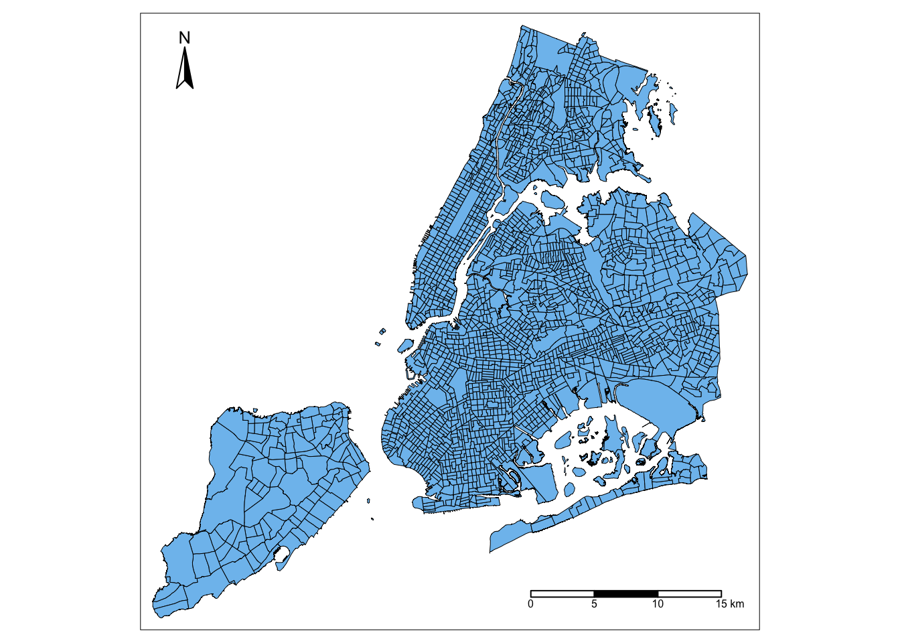
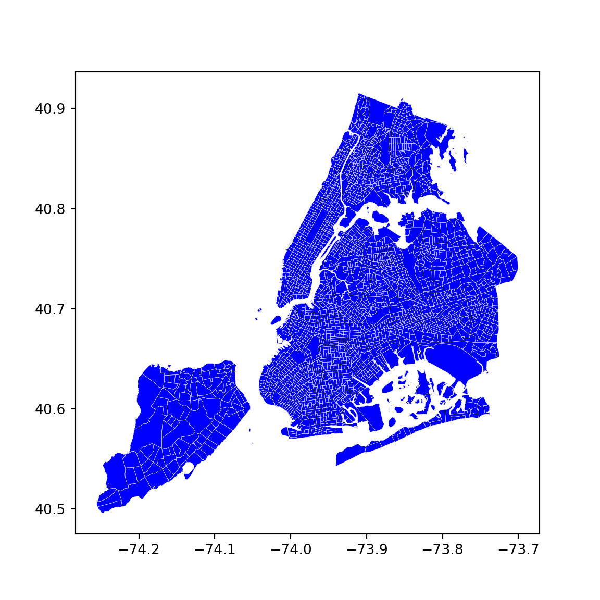
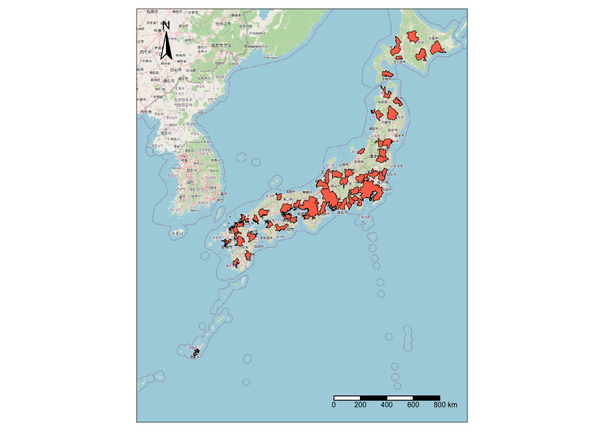
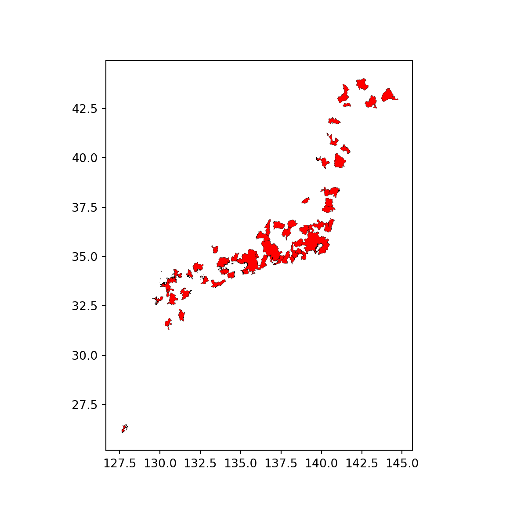
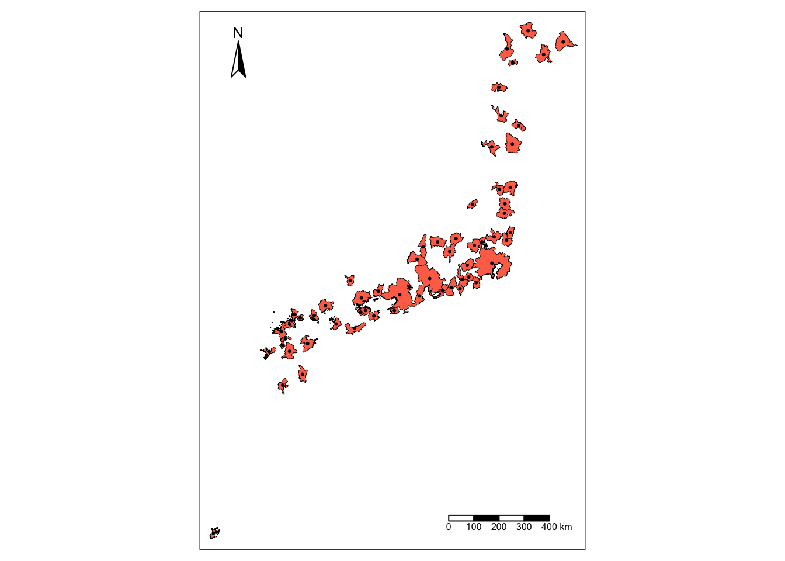
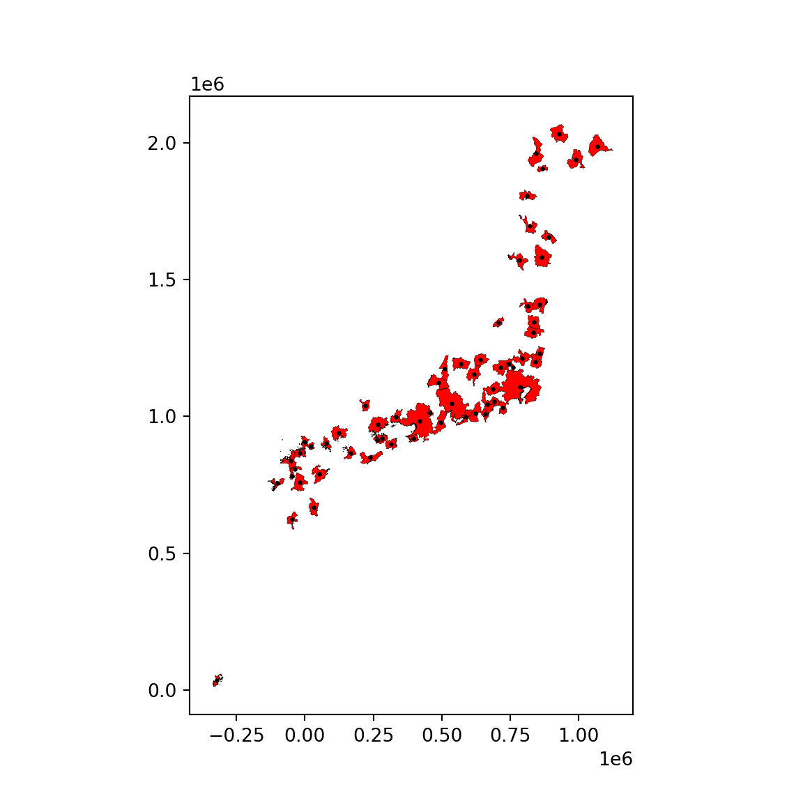

library(sf)
library(spdep)
library(tmap)
library(tmaptools)
library(rosm)Do-It-Yourself
import seaborn as sns
import pandas as pd
from pysal.lib import weights
from libpysal.io import open as psopen
import geopandas as gpd
import numpy as np
import matplotlib.pyplot as pltTask I: NYC tracts
In this task we will explore contiguity weights.To do it, we will load Census tracts for New York City. Census tracts are the geography the US Census Burearu uses for areas around 4,000 people. We will use a dataset prepared as part of the PySAL examples. Geographically, this is a set of polygons that cover all the area of the city of New York.
Let’s read the shapefile:
nyc <- st_read('./data/NYC/NYC_tract_ACS2008_12.shp')Reading layer `NYC_Tract_ACS2008_12' from data source
`/Users/carmen/Library/CloudStorage/OneDrive-TheUniversityofLiverpool/github/gds/data/NYC/NYC_Tract_ACS2008_12.shp'
using driver `ESRI Shapefile'
Simple feature collection with 2166 features and 113 fields
Geometry type: MULTIPOLYGON
Dimension: XY
Bounding box: xmin: -74.25559 ymin: 40.49612 xmax: -73.70001 ymax: 40.91553
CRS: NAnyc = gpd.read_file('./data/NYC/NYC_tract_ACS2008_12.shp')Make sure the crs is set to EPSG:4325:
nyc <- st_set_crs(nyc, "EPSG:4326")nyc = nyc.set_crs('EPSG:4326')And we can visualise the data:
tm_shape(nyc) +
tm_borders(col = "black", lwd = 0.5) +
tm_fill(col = "skyblue2") +
tm_compass(position = c("left", "top")) +
tm_scale_bar(position = c("right", "bottom")) 
f, ax = plt.subplots(1, figsize=(6, 6))
nyc.plot(ax=ax, facecolor='b', edgecolor='w', linewidth=0.2)
plt.show()
Now with the nyc object ready to go, here are a few tasks for you to complete:
- Create a contiguity matrix using the queen criterion. If using R, use the
nb2listw()function, but adding the additionalzero.policy = TRUEargument to ensure that lists of neighbours with zero length are allowed:
nb2listw(nb_q, style = "B", zero.policy = TRUE)
Let’s focus on Central Park. The corresponding polygon is ID 143. How many neighbors does it have?
Try to reproduce the zoom plot in the previous section, highlighting the polygon of interest and its neighbourhood..
Create a block spatial weights matrix where every tract is connected to other tracts in the same borough. For that, use the borocode column of the nyc table.
Task II: Japanese cities
In this task, you will be generating spatial weights matrices based on distance. We will test your skills on this using a dataset of Japanese urban areas provided by OECD.
We can read it directly from the JPN folder within the data folder:
jp_cities <- st_read("./data/JPN/JPN_core_commuting.shp")Reading layer `JPN_core_commuting' from data source
`/Users/carmen/Library/CloudStorage/OneDrive-TheUniversityofLiverpool/github/gds/data/JPN/JPN_core_commuting.shp'
using driver `ESRI Shapefile'
Simple feature collection with 61 features and 2 fields
Geometry type: MULTIPOLYGON
Dimension: XY, XYZ
Bounding box: xmin: 127.533 ymin: 26.07447 xmax: 144.7855 ymax: 44.02702
z_range: zmin: 0 zmax: 0
Geodetic CRS: WGS 84jp_cities = gpd.read_file("./data/JPN/JPN_core_commuting.shp")If we make a quick plot, we can see these are polygons covering the part of the Japanese geography that is considered urban by the OECD:
::: {.panel-tabset group=“language”} ## R
base = osm.raster(jp_cities)
tm_shape(base) + tm_rgb() +
tm_shape(jp_cities) +
tm_borders(col = "black", lwd = 0.5) +
tm_fill(col = "coral1") +
tm_compass(position = c("left", "top")) +
tm_scale_bar(position = c("right", "bottom")) 
Python
f, ax = plt.subplots(1, figsize=(6, 6))
jp_cities.plot(ax=ax, facecolor='red', edgecolor='k', linewidth=0.2)
plt.show()
For this example, we need two transformations: lon/lat coordinates to a geographical projection, and polygons to points. To calculate distances effectively, we need to ensure the coordinates of our geographic data are expressed in metres (or a similar measurement unit). The original dataset is expressed in lon/lat degrees, but we can use the Japan Plane Rectangular CS XVII system (EPSG:2459), which is expressed in metres:
::: {.panel-tabset group=“language”} ## R
jp_cities <- st_transform(jp_cities, "EPSG:2459")
st_crs(jp_cities)Coordinate Reference System:
User input: EPSG:2459
wkt:
PROJCRS["JGD2000 / Japan Plane Rectangular CS XVII",
BASEGEOGCRS["JGD2000",
DATUM["Japanese Geodetic Datum 2000",
ELLIPSOID["GRS 1980",6378137,298.257222101,
LENGTHUNIT["metre",1]]],
PRIMEM["Greenwich",0,
ANGLEUNIT["degree",0.0174532925199433]],
ID["EPSG",4612]],
CONVERSION["Japan Plane Rectangular CS zone XVII",
METHOD["Transverse Mercator",
ID["EPSG",9807]],
PARAMETER["Latitude of natural origin",26,
ANGLEUNIT["degree",0.0174532925199433],
ID["EPSG",8801]],
PARAMETER["Longitude of natural origin",131,
ANGLEUNIT["degree",0.0174532925199433],
ID["EPSG",8802]],
PARAMETER["Scale factor at natural origin",0.9999,
SCALEUNIT["unity",1],
ID["EPSG",8805]],
PARAMETER["False easting",0,
LENGTHUNIT["metre",1],
ID["EPSG",8806]],
PARAMETER["False northing",0,
LENGTHUNIT["metre",1],
ID["EPSG",8807]]],
CS[Cartesian,2],
AXIS["northing (X)",north,
ORDER[1],
LENGTHUNIT["metre",1]],
AXIS["easting (Y)",east,
ORDER[2],
LENGTHUNIT["metre",1]],
USAGE[
SCOPE["Cadastre, engineering survey, topographic mapping (large and medium scale)."],
AREA["Japan - onshore Okinawa-ken east of 130°E."],
BBOX[24.4,131.12,26.01,131.38]],
ID["EPSG",2459]]Python
jp_cities = jp_cities.to_crs("EPSG:2459")
jp_cities.crs<Projected CRS: EPSG:2459>
Name: JGD2000 / Japan Plane Rectangular CS XVII
Axis Info [cartesian]:
- X[north]: Northing (metre)
- Y[east]: Easting (metre)
Area of Use:
- name: Japan - onshore Okinawa-ken east of 130°E.
- bounds: (131.12, 24.4, 131.38, 26.01)
Coordinate Operation:
- name: Japan Plane Rectangular CS zone XVII
- method: Transverse Mercator
Datum: Japanese Geodetic Datum 2000
- Ellipsoid: GRS 1980
- Prime Meridian: GreenwichNow, distances are easier to calculate between points than between polygons. Hence, instead of working with polygon geometries, we will work with point geometries corresponding to the centroids of each polygon:
jp_centroids = st_centroid(jp_cities)Warning: st_centroid assumes attributes are constant over geometriesjp_centroids = jp_cities.copy()
jp_centroids.geometry = jp_cities.geometry.centroidSo the result is a set of points expressed in metres, which we can visualise:
::: {.panel-tabset group=“language”} ## R
tm_shape(jp_cities) +
tm_borders(col = "black", lwd = 0.5) +
tm_fill(col = "coral1") +
tm_shape(jp_centroids) +
tm_dots()+
tm_compass(position = c("left", "top")) +
tm_scale_bar(position = c("right", "bottom")) 
Python
f, ax = plt.subplots(1, figsize=(6, 6))
jp_cities.plot(ax=ax, facecolor='red', edgecolor='k', linewidth=0.2)
jp_centroids.plot(ax=ax, markersize=2, color='k')
plt.show()
With these at hand, tackle the following challenges:
Generate a spatial weights matrix with five nearest neighbors
Generate a spatial weights matrix with a 100km distance band
Tip
Remember the dataset is expressed in metres, not Kilometres!
- Compare the two in terms of average number of neighbors. What are the main differences you can spot? In which cases do you think one criterion would be preferable over the other?
Warning
The final task below is a bit more involved, so do not despair if you cannot get it to work completely!
Focus on Tokyo (find the row in the table through a query search) and the 100km spatial weights generated above. Try to create a figure similar to the one in the lecture. Here’s a recipe:
Generate a buffer of 100Km around the Tokyo centroid
Start the plot with the Tokyo urban area polygon (jp_cities) in one color (e.g. red)
Add its neighbors in, say blue
Add their centroids in a third different color
Layer on top the buffer, making sure only the edge is colored
[Optional] Add a basemap
Tip: Be careful with the projections you are using and make sure to plot every dataset in a figure in the same projection!
Task III: Spatial Lag
Important
Check out the notes on how to read the AHAH dataset on the DIY section of Mapping Vector Data to refresh your memory before starting the task.
For this task, we will rely on the AHAH dataset. Create the spatial lag of the overall score, and generate a Moran plot. Can you tell any overall pattern? What do you think it means?